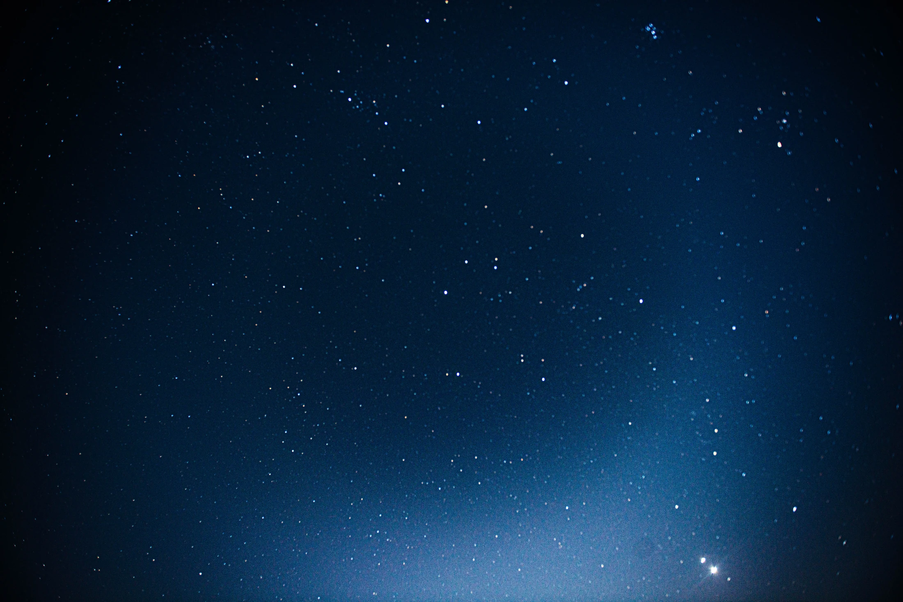

INDEPENDENT VOICES. SHARED CURIOSITY.文字 · 研究 · 影像 / 持续书写中
02 / SELECTED WRITING
值得停留的文字。
从一个问题出发，
走近更复杂的世界。
 CULTURE & CINEMA
CULTURE & CINEMA日本动漫中的
神道世界观
沿着新海诚的影像，重新理解「结」、祈祷与边界。
当代青年，
如何看待婚姻？
以甘肃省调查数据为例，讨论婚恋观念与个体选择。
 LITERATURE & SOCIETY
LITERATURE & SOCIETY外语政治文学中的
社会反思研究
在文学的叙述中，辨认时代、权力与人的处境。
恶的双重性
身份政治的恶魔与无知的怪兽。
关于尊严、判断与公共生活。
《你的名字。》官方宣传图 · 来源。智利历史影像：智利国会图书馆，经 PBrieux 修复 · Wikimedia Commons · CC BY 3.0 CL（首页作裁切与灰度显示）。数字 147 为婚姻研究问卷样本量；封面线条为装饰。


不急于给出答案。
先让问题，被认真看见。